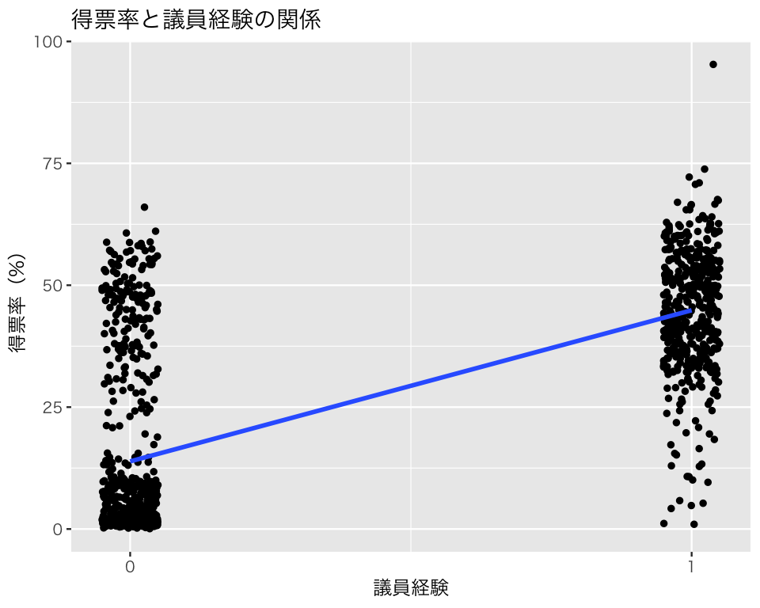
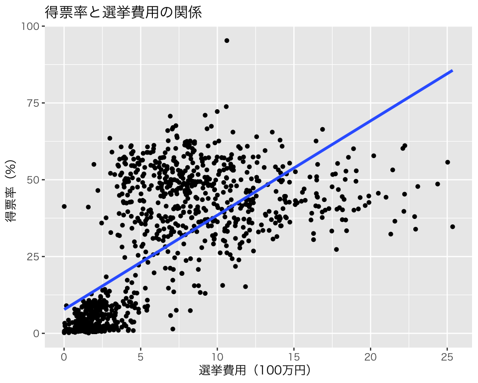
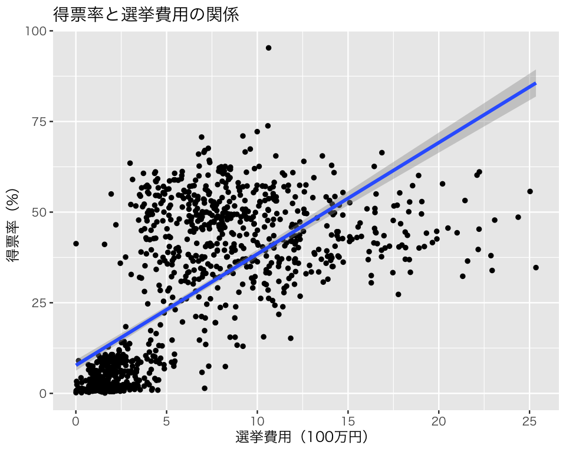

pacman::p_load(tidyverse,
broom,
texreg)
if (.Platform$OS.type == "windows") {
if (require(fontregisterer)) {
my_font <- "Yu Gothic"
} else {
my_font <- "Japan1"
}
} else if (capabilities("aqua")) {
my_font <- "HiraginoSans-W3"
} else {
my_font <- "IPAexGothic"
}
theme_set(theme_gray(base_size = 9,
base_family = my_font))3 回帰分析の基礎
今回の目標
- Rで回帰直線を求める方法を身につける
- 記述統計としての回帰直線の意味を理解する
3.1 準備
まず、必要なパッケージを読み込む。
説明のために『Rによる計量政治学』（浅野正彦, 矢内勇生. 2018）で使用されているデータ（hr-data.csv）を使う。
まず、このデータをダウンロードして読み込む（データへのパスは各自の状況に応じて変えること。ここでは、RStudioのプロジェクトを利用していて、プロジェクトが存在するフォルダ内にdata という名前のフォルダがあり、その中にデータセットが保存されていると仮定している）。download.file() でダウンロードしたデータが読み込めない（「データが破損している」などの警告がでる）場合は、Webブラウザを使ってデータをダウンロードすること。
download.file(
url = "https://raw.githubusercontent.com/yukiyanai/quant-methods-R/master/data/hr-data.csv",
destfile = "data/hr-data.csv")データが入手できたら、データを読み込み、中身を確認する。
HR <- read_csv("data/hr-data.csv")Rows: 8803 Columns: 22
── Column specification ────────────────────────────────────────────────────────
Delimiter: ","
chr (7): ku, status, name, party, wl, smd, party_jpn
dbl (15): year, kun, party_code, previous, voteshare, age, nocand, rank, vot...
ℹ Use `spec()` to retrieve the full column specification for this data.
ℹ Specify the column types or set `show_col_types = FALSE` to quiet this message.glimpse(HR)Rows: 8,803
Columns: 22
$ year <dbl> 1996, 1996, 1996, 1996, 1996, 1996, 1996, 1996, 1996, 1996,…
$ ku <chr> "aichi", "aichi", "aichi", "aichi", "aichi", "aichi", "aich…
$ kun <dbl> 1, 1, 1, 1, 1, 1, 1, 2, 2, 2, 2, 2, 2, 2, 2, 3, 3, 3, 3, 3,…
$ status <chr> "現職", "元職", "現職", "新人", "新人", "新人", "新人", "現…
$ name <chr> "KAWAMURA, TAKASHI", "IMAEDA, NORIO", "SATO, TAISUKE", "IWA…
$ party <chr> "NFP", "LDP", "DPJ", "JCP", "others", "kokuminto", "indepen…
$ party_code <dbl> 8, 1, 3, 2, 100, 22, 99, 8, 1, 3, 2, 10, 100, 99, 22, 8, 1,…
$ previous <dbl> 2, 3, 2, 0, 0, 0, 0, 1, 1, 0, 0, 0, 0, 0, 0, 1, 3, 1, 0, 0,…
$ wl <chr> "当選", "落選", "落選", "落選", "落選", "落選", "落選", "当…
$ voteshare <dbl> 40.0, 25.7, 20.1, 13.3, 0.4, 0.3, 0.2, 32.9, 26.4, 25.7, 12…
$ age <dbl> 47, 72, 53, 43, 51, 51, 45, 51, 71, 30, 31, 44, 61, 47, 43,…
$ nocand <dbl> 7, 7, 7, 7, 7, 7, 7, 8, 8, 8, 8, 8, 8, 8, 8, 7, 7, 7, 7, 7,…
$ rank <dbl> 1, 2, 3, 4, 5, 6, 7, 1, 2, 3, 4, 5, 6, 7, 8, 1, 2, 3, 4, 5,…
$ vote <dbl> 66876, 42969, 33503, 22209, 616, 566, 312, 56101, 44938, 43…
$ eligible <dbl> 346774, 346774, 346774, 346774, 346774, 346774, 346774, 338…
$ turnout <dbl> 49.2, 49.2, 49.2, 49.2, 49.2, 49.2, 49.2, 51.8, 51.8, 51.8,…
$ exp <dbl> 9828097, 9311555, 9231284, 2177203, NA, NA, NA, 12940178, 1…
$ expm <dbl> 9.828097, 9.311555, 9.231284, 2.177203, NA, NA, NA, 12.9401…
$ vs <dbl> 0.400, 0.257, 0.201, 0.133, 0.004, 0.003, 0.002, 0.329, 0.2…
$ exppv <dbl> 28.341505, 26.851941, 26.620462, 6.278449, NA, NA, NA, 38.2…
$ smd <chr> "当選", "落選", "落選", "落選", "落選", "落選", "落選", "当…
$ party_jpn <chr> "新進党", "自民党", "民主党", "共産党", "その他", "国民党",…衆議院議員経験があることを表す変数（ダミー変数）と選挙費用を100万 (1e6 \(=10^6\)) 円単位で測定する変数を作る。 新しい変数は dplyr::mutate() で作る。
HR <- HR |>
mutate(experience = as.numeric(status == "現職" | status == "元職"),
expm = exp / 1e6)次に、データから2009年の結果だけ抜き出し、HR09として保存する。特定の条件に合致するデータを抜き出したいときは、dplyr::filter() を使う。
HR09 <- HR |>
filter(year == 2009)3.2 Rで線形回帰分析を行う
3.2.1 説明変数が二値しかとらないとき（モデル1）
得票率（結果変数）を議員経験（説明変数）で説明するモデルを考えよう。 議員経験は、現職または元職の候補者なら1、そうでなければ0をとる二値 (binary) 変数（ダミー変数）である。 このモデルを式で表すと、 \[ 得票率_i = \beta_1 + \beta_2 \cdot 議員経験_i + e_i \] と、なる。
Rでは、lm() で回帰式を推定することができる。
fit_1 <- lm(voteshare ~ experience, data = HR09)これで、fit_1 に推定結果（係数の推定値など）が保存される。
基本的な結果は、summary() で見ることができる。
summary(fit_1)
Call:
lm(formula = voteshare ~ experience, data = HR09)
Residuals:
Min 1Q Median 3Q Max
-43.867 -12.072 -5.567 8.583 52.123
Coefficients:
Estimate Std. Error t value Pr(>|t|)
(Intercept) 13.8772 0.6203 22.37 <2e-16
experience 30.9898 0.9783 31.68 <2e-16
Residual standard error: 16.19 on 1137 degrees of freedom
Multiple R-squared: 0.4688, Adjusted R-squared: 0.4684
F-statistic: 1004 on 1 and 1137 DF, p-value: < 2.2e-16この結果は少し読みにくいので、代わりに broom:tidy() を利用しよう。
tidy(fit_1)# A tibble: 2 × 5
term estimate std.error statistic p.value
<chr> <dbl> <dbl> <dbl> <dbl>
1 (Intercept) 13.9 0.620 22.4 3.78e- 92
2 experience 31.0 0.978 31.7 2.18e-158この出力の、estimate の列に係数の推定値 (coefficient estimates) が示されている。 これにより、\(\hat{\beta}_1=\) 13.88, \(\hat{\beta}_2=\) 30.99, \(\hat{\sigma}=\) 16.19 が得られた。 したがって、 \[\widehat{得票率} = 13.88 + 30.99 \cdot 議員経験\] と、なる。
傾きの値を、分散と共分散を利用して求めてみよう（Slack で配布する補足資料を参照）。分散は var()、共分散 は cov() で計算できる。
lm() で求めた傾きの値と一致することが確認できる。
次に、行列計算で回帰係数を求めてみよう（Slack で配布する補足資料を参照）。応答変数の\(N\)次元列ベクトルを \(N \times 1\)行列として用意する。
y <- matrix(HR09$voteshare, ncol = 1)計画行列は、第1列がすべて1、第2列が議員経験なので、
行列の掛け算は %*%、転置は t()、逆行列は solve() で求められるので、回帰係数 b_hat は、
lm() を使った場合と同じ結果が得られる。
この結果を図示しよう。
p1 <- ggplot(HR09, aes(x = experience, y = voteshare)) +
scale_x_continuous(breaks = c(0, 1)) +
geom_jitter(position = position_jitter(width = 0.05), size = 1) +
geom_smooth(method = "lm", se = FALSE) +
labs(x = "議員経験", y = "得票率（%）")
plot(p1 + ggtitle("得票率と議員経験の関係"))`geom_smooth()` using formula = 'y ~ x'
この図に推定の不確実性を示すには、geom_smooth(method = 'lm', se = TRUE) とすればよい（が、 se = TRUE はデフォルトなので、seを指定する必要はない）。 デフォルトでは、95パーセント信頼区間が回帰直線の周りに表示される（この例では、区間が狭すぎてよく見えない）。
p1_ci95 <- p1 + geom_smooth(method = "lm")
plot(p1_ci95 + ggtitle('得票率と議員経験の関係'))`geom_smooth()` using formula = 'y ~ x'
`geom_smooth()` using formula = 'y ~ x'信頼度を変えたいとき、例えば99.99パーセント信頼区間を表示したいときは、次のようにlevelを指定する。
p1_ci50 <- p1 + geom_smooth(method = "lm", level = 0.9999)
plot(p1_ci50 + ggtitle("得票率と議員経験の関係"))`geom_smooth()` using formula = 'y ~ x'
`geom_smooth()` using formula = 'y ~ x'この直線の切片である13.88は、議員経験がない候補者の平均得票率（予測得票率）である。 予測値の式の「議員経験」に0を代入すれば、これは明らかである。 議員経験がある候補者の平均得票率（予測得票率）は、「議員経験」に1を代入することで得られる。 代入してみると、 \(13.88 +30.99 \cdot 1 = 44.87\) となる。
Rで議員経験ごとに平均得票率を求め、上の式から求めた予測値と一致するか確かめよう。 dplyr::group_by() を使うと、指定した変数の値が同じグループを作ることができる。
HR09 |>
group_by(experience) |>
summarize(voteshare = mean(voteshare),
.groups = "drop")# A tibble: 2 × 2
experience voteshare
<dbl> <dbl>
1 0 13.9
2 1 44.9このように、予測値は説明変数の値を与えられたときの、結果変数の平均値であることがわかる。
3.2.2 説明変数が連続値をとるとき（モデル2）
同様に、得票率を選挙費用（測定単位：100万円）で説明するモデルは、次のように推定できる。
fit_2 <- lm(voteshare ~ expm, data = HR09)
tidy(fit_2)# A tibble: 2 × 5
term estimate std.error statistic p.value
<chr> <dbl> <dbl> <dbl> <dbl>
1 (Intercept) 7.74 0.757 10.2 1.61e- 23
2 expm 3.07 0.0958 32.1 1.14e-160傾きの値を、分散と共分散を利用して求めてみよう。expm には欠測値があるので、で欠測値がない個体のみを利用する。
lm() で求めた傾きの値と一致することが確認できる。
回帰直線を図示する。
p2 <- ggplot(HR09, aes(x = expm, y = voteshare)) +
geom_point(size = 1) +
geom_smooth(method = "lm", se = FALSE) +
labs(x = "選挙費用（100万円）", y = "得票率（%）")
plot(p2 + ggtitle("得票率と選挙費用の関係"))`geom_smooth()` using formula = 'y ~ x'Warning: Removed 15 rows containing non-finite values (`stat_smooth()`).Warning: Removed 15 rows containing missing values (`geom_point()`).
95パーセント信頼区間を加える。
p2_ci95 <- p2 + geom_smooth(method = "lm")
plot(p2_ci95 + ggtitle("得票率と選挙費用の関係"))`geom_smooth()` using formula = 'y ~ x'Warning: Removed 15 rows containing non-finite values (`stat_smooth()`).`geom_smooth()` using formula = 'y ~ x'Warning: Removed 15 rows containing non-finite values (`stat_smooth()`).Warning: Removed 15 rows containing missing values (`geom_point()`).
複数のモデルで回帰分析を実行し、結果を一つの表にまとめたいときは、texreg::screenreg() が便利である（HTMLに出力するなら htmlreg()、LaTeX (PDF) 用には texreg()を使う）。
models <- list(`Model 1` = fit_1,
`Model 2` = fit_2)
screenreg(models, stars = NULL)
===============================
Model 1 Model 2
-------------------------------
(Intercept) 13.88 7.74
(0.62) (0.76)
experience 30.99
(0.98)
expm 3.07
(0.10)
-------------------------------
R^2 0.47 0.48
Adj. R^2 0.47 0.48
Num. obs. 1139 1124
===============================HTMLに出力する場合。
htmlreg(models,
stars = NULL,
doctype = FALSE,
caption = "回帰分析の結果",
caption.above = TRUE)| Model 1 | Model 2 | |
|---|---|---|
| (Intercept) | 13.88 | 7.74 |
| (0.62) | (0.76) | |
| experience | 30.99 | |
| (0.98) | ||
| expm | 3.07 | |
| (0.10) | ||
| R2 | 0.47 | 0.48 |
| Adj. R2 | 0.47 | 0.48 |
| Num. obs. | 1139 | 1124 |
PDFに knit する場合には、texreg() を使う（出力は省略する）。
texreg(models,
stars = NULL,
caption = "回帰分析の結果",
caption.above = TRUE)